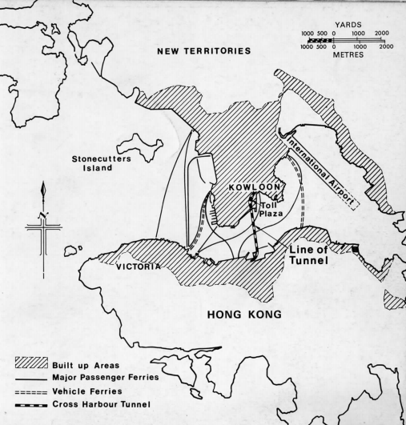

CODE1230
2

Hong kong The Cross-Harbour Tunnel This submarine tunnel was the first transportation project to be implemented in Hong Kong using the Build-Operate-Transfer model. The main purpose of this transportation project was to ease traffic pressure and provide citizens with convenient modes of travel. Before the excavation of the Cross Harbour Tunnel in 1972, the only way for thousands of people to travel to Kowloon and Hong Kong was by ferry. However, since the completion of the 1.8-kilometre long-sea tunnel, it became the central hub of the two places and introduced connections. The main financial and commercial areas on both sides of the picturesque Victoria Harbour have greatly shortened the commute time, which greatly facilitates the exchanges between the two places. Since Hong Kong's residents have grown from 4 million in 1971 to 7 million in 2011, it is necessary to say that such efficient transportation is necessary. The traffic volume of this submarine tunnel is also very alarming. From 29,600 vehicles at the end of 1972 to an average of 115,200 vehicles per day, it is safe to say that tunnels have become the basis of modern development. It is also a symbol of the road to urban transformation in Hong Kong.
